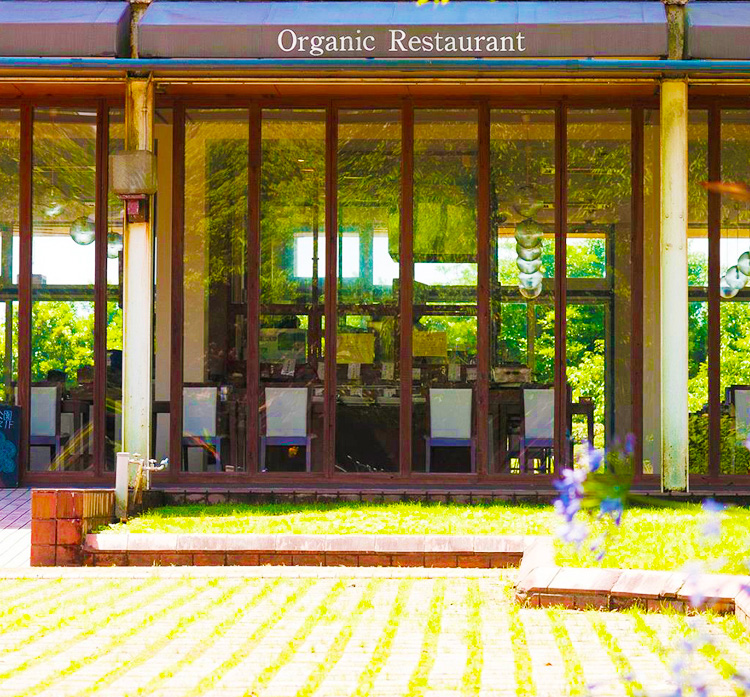
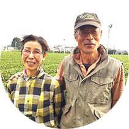
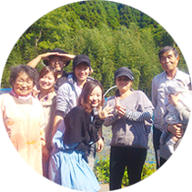
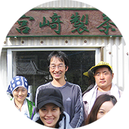

仕事の関係で宮崎の多くの農家さんに出会う機会がありました。農薬や化学肥料を使わない方が多く、 とてもたくさんの知識を持った心と頭のいい方達だったので、自分たちの苦労はかえりみず、自然農法を実践していました。 ですが、手作業で虫を捕ったり苦労する分と本当に体に良いものを作っているのに付加価値をつけられていなかったのです。 こんなにすばらしい商品が多くの人に知られていないなんてもったいない！と思い、だったら、その信念を持った農家さんたちの 食材に本当の価値をつけて消費者に届ける事が出来ないかと考えました。 そんなとき、宮崎の観光地である平和台公園の レストハウス出店の募集をみつけました。
SIZENについて

- 
- 
- 
この緑豊かな公園の中で、大好きな農家さんの本物の食事を楽しんでもらえるレストランを作ったら
とても素敵!と。
これが、オーガニックレストランsizenのストーリーのはじまりです。
アクセス
- 営業時間 :平日:11:00 ~ 15 : 00 , 17 : 00 ~ 21 : 00
- 土日:10 : 00 ~ 15 : 00 , 17 : 00 ~ 21 : 00
- 定休日 : 月曜日
- 住所:宮崎県宮崎市下北方町越ケ迫6146
- 平和台公園レストハウス1F
- 駐車場 ：あり
- 電話番号:0985-31-3693